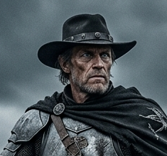

Write Lee's backstory here — where they're from, how they ended up with the Red Wings, and what shaped them before the campaign started.
A few lines on how Lee acts at the table — their quirks, how they talk, what drives them, what scares them.
Anything ongoing: relationships with other party members, unresolved plot threads, secrets, or things the DM should remember.